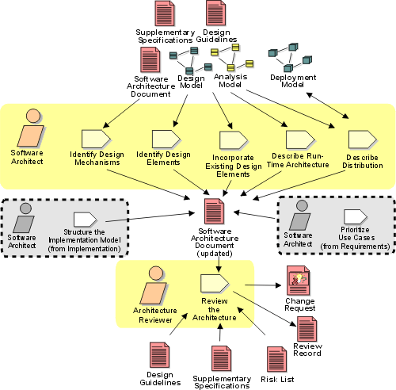

Disciplines >
Disciplines >
 Analysis & Design >
Analysis & Design >
 Workflow >
Refine the Architecture
Workflow >
Refine the Architecture
Disciplines >
Analysis & Design >
Workflow >
Refine the Architecture
Workflow Detail:
|
Topics |
 |
The purpose of this workflow detail is to:
These activities are best carried out by a small team staffed by cross-functional team members. Issues that are typically architecturally significant include performance, scaling, process and thread synchronization, and distribution. The team should also include members with domain experience who can identify key abstractions. The team should also have experience with model organization and layering. The team will need to be able to pull all these disparate threads into a cohesive, coherent (albeit preliminary) architecture.
Because the focus of the architecture effort is shifting toward implementation issues, greater attention needs to be paid to specific technology issues. This will force the architecture team to shift members or expand to include people with distribution and deployment expertise (if those issues are architecturally significant). In order to understand the potential impact of the structure on the implementation model on the ease of integration, expertise in the software build management process is useful to have.
At the same time, it is essential that the architecture team not be composed of a large extended team. A strategy for countering this trend is to retain a relatively small core team with a satellite group of extended team members that are brought in as "consultants" on key issues. This structure also works well for smaller projects where specific expertise may be borrowed or contracted from other organizations; they can be brought in as specific issues need to be addressed.
The work is best done in several sessions, perhaps performed over a few days (or weeks and months for very large systems). The initial focus will be on the activities Identify Design Mechanisms and Identify Design Elements, with a great deal of iteration with the Incorporate Existing Design Elements activity to make sure that new elements do not duplicate functionality of existing elements.
As the design emerges, concurrency and distribution issues are introduced in
the activities Describe the Run-time
Architecture and Describe Distribution,
respectively. As these issues are considered, changes to design elements may be
required to split behavior across processes, threads or nodes.
|
Rational Unified
Process
|